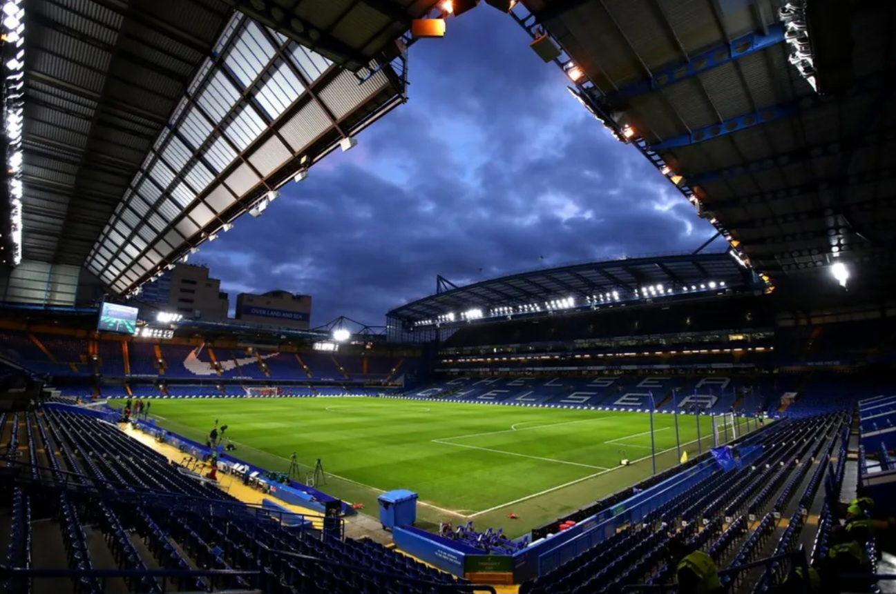
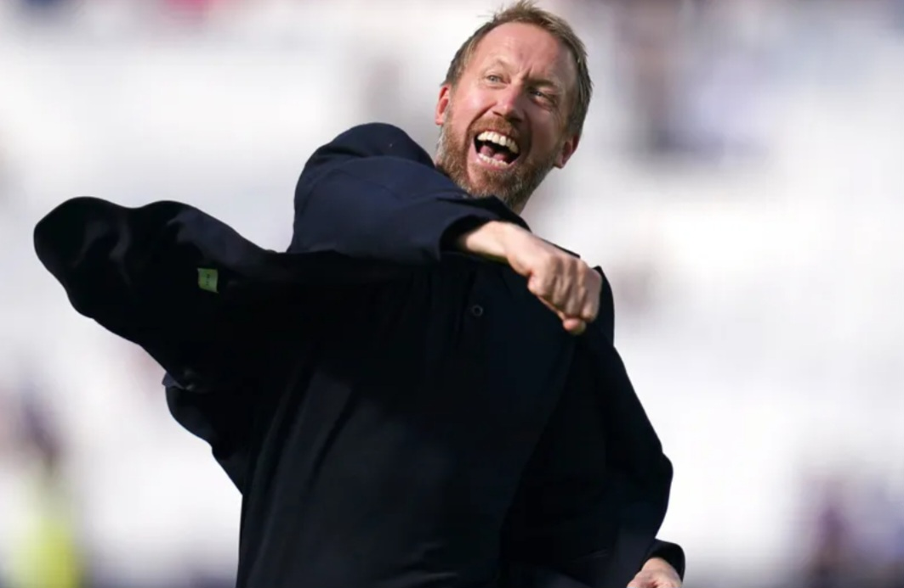
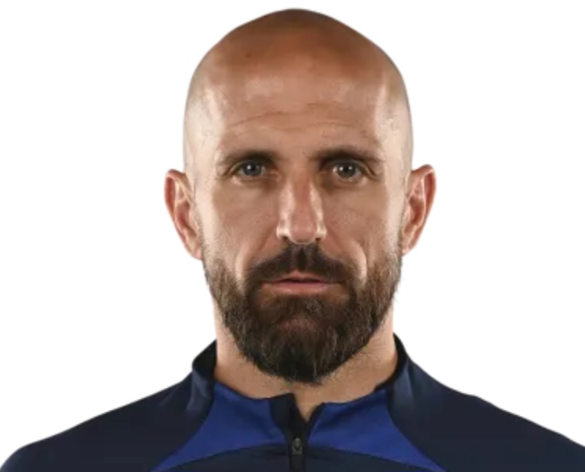
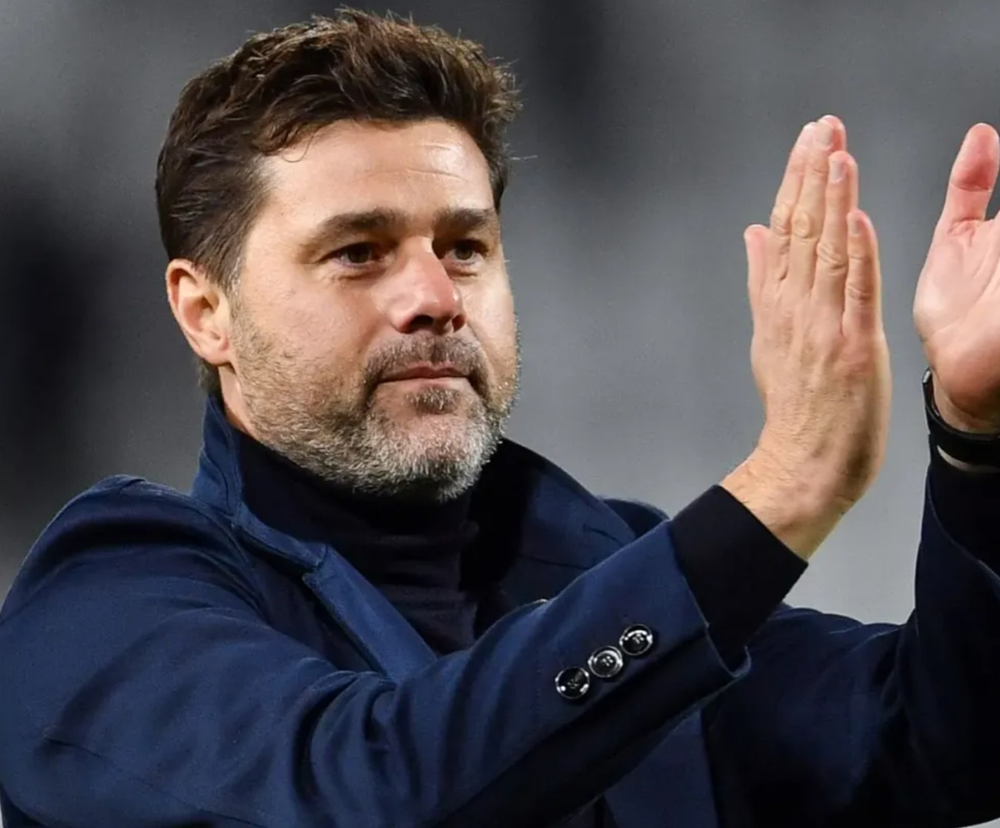

프리미어 리그 : 1954-55, 2004-05, 2005-06, 2009-10, 2014-15, 2016-17
EFL 챔피언십 : 1983-84, 1988-89
FA컵 : 1969-70, 1996-97, 1999-00, 2006-07, 2008-09, 2009-10, 2011-12, 2017-18
EFL컵 : 1964-65, 1997-98, 2004-05, 2006-07, 2014-15
FA 커뮤니티 실드 : 1955, 2000, 2005, 2009
UEFA 컵위너스컵 : 1970-1971, 1997-98
UEFA 유로파 리그 : 2012-13, 2018-19
UEFA 챔피언스 리그 : 2011-12, 2020-21
UEFA 슈퍼컵 : 1998, 2021
FIFA 클럽 월드컵 : 2021
홈구장

스탬포드 브릿지
개장일: 1877년 4월 28일
수용인원: 40,341명
위치: 런던 SW6 1HS 풀럼 로드
그라운드 크기: 103.3m x 67.7m
UEFA 등급: ★★
2022-23 시즌 주요 선수 ( 3 - 4 - 3 )
29 Kai Havertz
11 Joao Felix
17 Raheem Sterling
21 Ben Chilwell
8 Mateo Kovacic
5 Enzo Fernandez
24 Reece James
6 Thiago Silva
26 Kalidou Koulibaly
33 Wesley Fofana
1 Kepa Arrizabalaga
2022-23 시즌 감독과 전술
토마스 투헬
대수: 41대
감독 기간: 2021년 1월 26일 ~ 2022년 9월 7일
사용 포메이션: 3 - 4 - 3
장점: 선수 기량 극대화, 다양한 전술 활용 가능
단점: 선수, 보드진과 불화, 인격적인 결함

그레이엄 포터
대수: 42대
감독 기간: 2022년 9월 8일 ~ 2023년 4월 2일
사용 포메이션: 3 - 4 - 3
장점: 다양한 전술 활용 가능
단점: 조약한 공격력

브루노 살토르
대수: 43대 (대행)
감독 기간: 2023년 4월 3일 ~ 2023년 4월 5일
사용 포메이션: 3 - 5 - 2
특징: 1경기 지휘
프랭크 램파드
대수: 44대 (임시)
감독 기간: 2023년 4월 6일 ~ 2023년 5월 28일
사용 포메이션: 4 - 2 - 3 - 1, 4 - 3 - 3, 3 - 4 - 3 등
장점: 공격적 축구, 폭넓은 선수 기용
단점: 역습에 취약, U자 빌드업

마우리시오 포체티노
대수: 45대
감독 기간: 2023년 5월 29일 ~
사용 포메이션: 4 - 2 - 3 - 1
장점: 전술적 유연성, 선수단 장악력
단점: 후방 빌드업 능력 부족, 선수 개인 역량 의존
역사적인 경기
2011-12 UCL 결승
2012년 5월 20일
뮌헨 vs 첼시 (1 vs 1 Pen 3 vs 4)